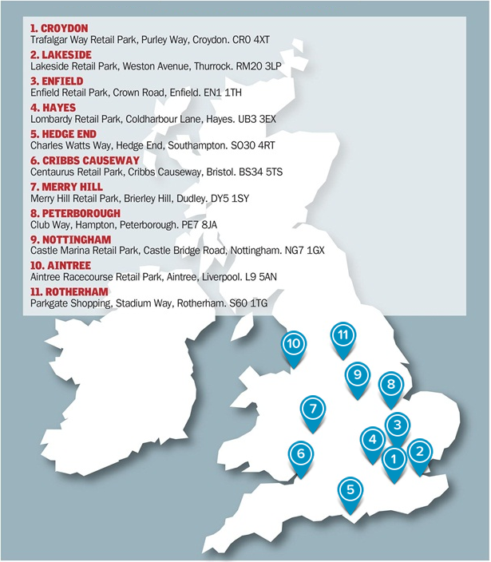
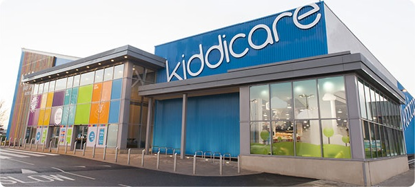
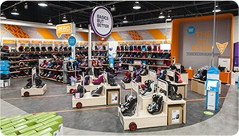
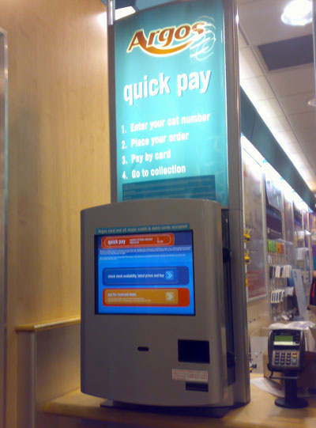
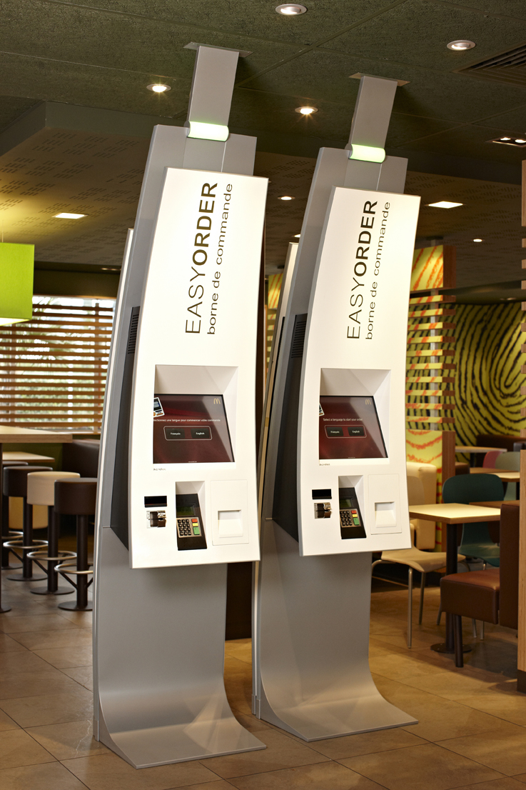
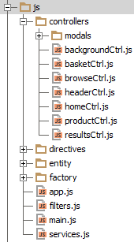
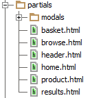

The Plan
- Problem Domain
- Take a look at the app
- Peek under the hood
- Profit???
About me
Code Monkey
- Jack of a few trades, master of...
- Lincoln University Graduate
- { Java - C# } + < JS - CSS - HTML />
- Specialising more in heavy "front end"
- Not here to patronize, be gentle!
- Cookies to whoever picks up an accent
Disclaimer
THE SOFTWARE IS PROVIDED AS IS, WITHOUT WARRANTY OF ANY KIND, EXPRESS OR IMPLIED, INCLUDING BUT NOT LIMITED TO THE WARRANTIES OF MERCHANTABILITY, FITNESS FOR A PARTICULAR PURPOSE AND NONINFRINGEMENT. IN NO EVENT SHALL THE AUTHORS BE LIABLE FOR ANY CLAIM, DAMAGES OR OTHER LIABILITY, WHETHER IN AN ACTION OF CONTRACT, TORT OR OTHERWISE, ARISING FROM, OUT OF OR IN CONNECTION WITH THE SOFTWARE OR THE USE OR OTHER DEALINGS IN THE SOFTWARE.



Browse & Order Points


Browse & Order Points
- In-store collection
- Back store warehouse
- Reduce till queue times
- Scan & search full range
- Home delivery options
- e.g. Pre-Orders
- Web based architecture
User Journey
Brief Architecture
Needed Improving
Evolving Narrative
jQuery to the rescue?
- Existing JSON services
- Quick prototype built
- Mixed business and presentation logic
- Not easily scalable
- Not easily maintainable
- Not easily testable
AngularJS saves the day!
- ✓ Data binding
- ✓ Templating
- ✓ Extending HTML vocabulary
- ✓ Routing and deep linking
- ✓ Dependency injection
- ✓ Unit Testing (Karma & Jasmine) / E2E Testing
- ✓ Third Party components - e.g. Angular-UI Team
Project Timeline
- Proposed Summer 2013
- Deployed late November 2013
- Further improvements February 2014
Live Demo
Comparison
Under the Hood


Bootstrap - index.html
<!doctype html>
<html lang="en" ng-app="KIDDI.app">
<head>
<!-- head tags including title / meta / css -->
</head>
<body touch-stop-selection>
<div class="container" ng-controller="backgroundCtrl">
<div class="kiddicareCandyBarStripe stripeHeader"></div>
<include-partial-template template-name="header"></include-partial-template>
<div ng-view></div>
</div>
<!-- shed load of script tags -->
</body>
</html>
Startup - app.js
angular.module('KIDDI.app', [ /* dependencies e.g. 'ngLocale' */ ])
.run([ /*DI*/, function( /*DI*/ ){
/* pre-cache templates */
}])
.config(['$routeProvider', '$sceProvider', 'AnalyticsProvider', function( $routeProvider, $sceProvider, AnalyticsProvider ) {
AnalyticsProvider.setAccount( /* UA-... */ );
AnalyticsProvider.trackPages( true );
AnalyticsProvider.setDomainName( /* domain */ );
$routeProvider.when('/home', {
templateUrl: 'partials/home.html',
controller: 'homeCtrl'
});
$routeProvider.when('/browse/:attribute', { templateUrl: 'partials/browse.html', controller: 'browseCtrl' });
$routeProvider.when('/results', { templateUrl: 'partials/results.html', controller: 'resultsCtrl' });
$routeProvider.when('/product/:websphereId', { templateUrl: 'partials/product.html', controller: 'productCtrl' });
$routeProvider.when('/basket', { templateUrl: 'partials/basket.html', controller: 'basketCtrl' });
$routeProvider.otherwise({redirectTo: '/home'});
}]);
Controller - backgroundCtrl.js
- Registers persistent background tasks
- Idle timeout popups
- HeartBeatMonitor
heartBeatMonitorInterval = setTimeout(function repeatTimeout() { $scope.$apply(function () { // Using $apply instead of $timeout // Repeat Timeout }); }, heartBeatMonitorIntervalCheckTimeout ); - Broadcast events e.g. Search / Timeout
// On header $scope.$emit( 'searchActive', true );
$scope.$on( 'searchActive', function( event, data ) {
if( data === true ) {
$scope.$broadcast('closeModals', true );
}
});
Template - product.html
<div class="name">
<span ng-bind-html="product.name|trustedHtml"></span>
</div>
<div class="sku">
<span>SKU: {{ product.sku }}</span>
</div>
<div class="feedback" ng-show="product.rating"
hm-touch="modalProductDetails.open('reviews')">
<div class="rating">
<img ng-src="{{ product.imageRating }}">
</div>
<div class="reviews">
<span>({{ product.totalReviews | number:0 }})</span>
</div>
</div>
<div class="price">
<span>{{ calculatedPrice | currency: "£" }}</span>
</div>
Directive - keypad.js
<input type="text" class="magnifyingGlass" keypad-search-with-barcode keypad-submit="submitNewSearchPhrase( searchTerm )" keypad-barcode-check="getSearchPhraseBarcode( searchTerm )" keypad-auto-close="closeKeypad" placeholder="Search for..." >
angular.module('KIDDI.app.directives.keypad', [])
.directive('keypadSearchWithBarcode', [ '$timeout', function ( $timeout ) {
return {
restrict: 'A',
scope: {
keypadAutoClose: '=?', // Bool: [optional] Set watcher to auto close
keypadSubmit: '&', // Function: when keypad is submitted
keypadBarcodeCheck: '&' // Function: when barcode has been scanned
},
link: function ( scope, element, attributes ) { ... } // Use jQuery Keypad Plugin
};
}]);

Services - services.js
- Useful discussion on services by Igor Minar
- Different ways to create services, we used constructor method
angular.module('KIDDI.app.services', [])
.service('Session', [ '$window', KIDDI.Session ])
.service('Finance', [ '$window', KIDDI.Finance ])
.service('UrlCheck', [ KIDDI.UrlCheck ])
.service('CategoryNamesCache', [ KIDDI.CategoryNamesCache ])
.service('EndecaResultsCache', [ KIDDI.EndecaResultsCache ])
.service('WCSProductStockResultsCache', [ KIDDI.WCSProductStockResultsCache ])
.service('WCSProductDetailResultsCache', [ KIDDI.WCSProductDetailResultsCache ])
.service('EndecaSearch', [ '$http', '$q', 'Session', 'Finance', 'EndecaResultsCache', 'CategoryNamesCache', KIDDI.EndecaSearchFactory ])
.service('WCSSearch', [ '$http', '$q', 'Session', 'WCSProductDetailResultsCache', KIDDI.WebSphereSearchFactory ])
.service('Basket', [ '$http', '$q', 'Session', 'WCSSearch', 'EndecaSearch', 'Finance', KIDDI.WSCBasket ])
.service('HeartBeatMonitor', [ '$http', '$q', 'Session', KIDDI.HeartBeatMonitor ])
.service('CarouselHelper', [ '$filter', KIDDI.CarouselHelper ])
.service('ContentSpotHelper', [ '$http', '$templateCache', 'Session', KIDDI.ContentSpotHelper ]);
Service - Basket
.service('Basket',
[ '$http', '$q', 'Session', 'WCSSearch', 'EndecaSearch', 'Finance', KIDDI.WSCBasket ])
'use strict';
var KIDDI = KIDDI || {}; // USE KIDDI NAMESPACE FOR OBJECTS
KIDDI.WSCBasket = function( $http, $q, session, WCSSearch, EndecaSearch, Finance ) { ... };
KIDDI.WSCBasket.prototype.getBasket = function() { ... };
KIDDI.WSCBasket.prototype.addItemToBasket = function ( item, qty, deliveryType ) { ... };
KIDDI.WSCBasket.prototype.updateBasketItem = function ( orderItemId, qty, deliveryType ) { ... };
KIDDI.WSCBasket.prototype.removeBasketItem = function ( orderItemId ) { ... };
KIDDI.WSCBasket.prototype.addBasketPromotionCode = function ( promotionCode ) { ... };
KIDDI.WSCBasket.prototype.removeBasketPromotionCode = function ( promotionCode ) { ... };
...
Basket.addItemToBasket( item, qty, deliveryType ).then( function( response ) { ... });
$q - promises
// In a nutshell
var basketRequest = function( $http, $q ) {
var deferred = $q.defer();
var doAsyncRequest = function( $http, deferred ) {
$http({ ... }).success( function( response ) {
// Modify response
deferred.resolve( response );
}).error( function( response ) {
deferred.reject( response );
});
};
doAsyncRequest( $http, deferred );
return deferred.promise;
};
$q - Basket Items
- Request basket items, then do additional request for each item
- Returning back the basket before all items had completed caused issues
- Effectively flooded the API without queuing them correctly
$q.all - Basket Items
KIDDI.Basket.prototype.getOrderItems = function() {
var orderItemsDeferred = $q.defer(),
orderItems = this.orderItems;
// Returns array of promises
var performQueuedSearchForBrowseItems( orderItems, $q ) = function() { ... };
// Only resolve once all the order item requests have been completed
$q.all( performQueuedSearchForBrowseItems( orderItems, $q ) ).then(function() {
// All promises in array resolved
orderItemsDeferred.resolve( orderItems );
}, function() { // If any failed
orderItemsDeferred.reject( false );
});
return orderItemsDeferred.promise;
};
Testing - Karma & Coverage
- Demo of Karma
- Demo of Karma Coverage Report
Tools
Lessons
- Structure app with boiler-plate e.g. angular-seed
- Break components into logical file structures, minify and merge through grunt if required
- Use ng-animate and CSS to complete transitions
- Different ways to create services, look into what works for you
- Use custom $q promises instead of anonymous functions to resolve async responses
- Use $q.all to resolve multiple promises in a single merged array
- Unit test with Karma and use Coverage to see any missed objects
<Thank You!>
<Questions?>
Built using io 2013 slides